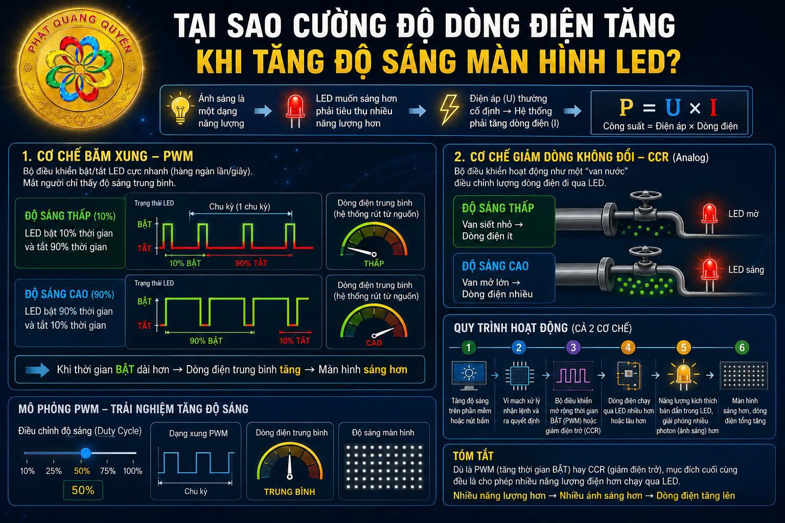

Giải thích cơ chế độ sáng và cường độ dòng điện LED
Chào bạn, câu hỏi của bạn rất hay và chạm đến đúng bản chất vật lý của các thiết bị điện tử hiển thị!
Để hiểu rõ tại sao cường độ dòng điện lại tăng khi bạn tăng độ sáng của màn hình LED, chúng ta cần nhìn vào nguyên lý cơ bản: Ánh sáng là một dạng năng lượng. Để một bóng LED phát ra nhiều ánh sáng hơn (sáng hơn), nó bắt buộc phải tiêu thụ nhiều năng lượng điện hơn. Vì điện áp (Voltage - U) cấp cho hệ thống màn hình thường là cố định, nên hệ thống buộc phải rút thêm cường độ dòng điện (Current - I) để đáp ứng nhu cầu năng lượng đó (P = U × I).
Tuy nhiên, "cơ chế" chính xác mà bộ điều khiển thực hiện việc này thường rơi vào một trong hai cách thức sau đây. Cách thứ nhất là phổ biến nhất trên các màn hình LED hiện nay:
1. Cơ chế Băm Xung - PWM (Pulse Width Modulation)
Đây là công nghệ được sử dụng trên hầu hết các bộ điều khiển màn hình LED. Thay vì cấp một dòng điện liên tục, bộ điều khiển sẽ bật và tắt bóng LED với tốc độ cực kỳ nhanh (thường là hàng ngàn lần mỗi giây). Tốc độ này nhanh đến mức mắt người không thể nhận ra sự nhấp nháy do hiện tượng lưu ảnh của võng mạc, mà chỉ cảm nhận được độ sáng tổng thể.
Cơ chế tăng dòng điện ở đây liên quan đến Chu kỳ nhiệm vụ (Duty Cycle):

- Khi ở độ sáng thấp (ví dụ 10%): Bộ điều khiển chỉ bật LED trong 10% thời gian của một chu kỳ, và tắt 90% thời gian còn lại. Mắt bạn sẽ thấy màn hình tối.
- Khi ở độ sáng cao (ví dụ 90%): Bộ điều khiển sẽ giữ LED bật trong 90% thời gian và chỉ tắt 10%.
- Tại sao dòng điện lại tăng? Khi thời gian "BẬT" (thời gian dòng điện thực sự chạy qua LED) dài hơn, thì dòng điện trung bình mà toàn bộ hệ thống rút ra từ nguồn cấp sẽ tăng lên. Đồng hồ đo điện của bạn đang đo giá trị dòng điện trung bình này.
2. Cơ chế Giảm Dòng Không Đổi - CCR (Constant Current Reduction)
Một số hệ thống điều khiển LED (thường là ở các đèn LED chiếu sáng dân dụng hoặc một số công nghệ màn hình đặc thù) sử dụng phương pháp Analog này.
Thay vì bật/tắt liên tục, bộ điều khiển hoạt động giống như một chiếc "van nước":
- Khi bạn muốn màn hình tối, bộ điều khiển sẽ siết "van" lại, tăng điện trở, làm cho lượng electron (dòng điện) chạy qua bóng LED ít đi.
- Khi bạn vặn độ sáng lên tối đa, bộ điều khiển mở toang "van", giảm điện trở xuống mức thấp nhất, cho phép một lượng lớn cường độ dòng điện chảy qua bóng LED liên tục.
Tóm lại quy trình diễn ra như sau:
- Bạn thao tác tăng độ sáng trên phần mềm/nút bấm.
- Vi mạch xử lý trong bộ điều khiển nhận lệnh và ra quyết định thay đổi trạng thái.
- Bộ điều khiển mở rộng "thời gian BẬT" của các xung điện (PWM) hoặc giảm điện trở để cho dòng điện đi qua nhiều hơn (CCR).
- Dòng điện (số lượng electron) chạy qua các đi-ốt phát quang (LED) nhiều hơn hoặc lâu hơn.
- Năng lượng điện này kích thích các bán dẫn trong LED, giải phóng ra nhiều photon (hạt ánh sáng) hơn.
- Kết quả: Màn hình sáng hơn và đồng hồ đo báo cường độ dòng điện tổng của hệ thống tăng lên.